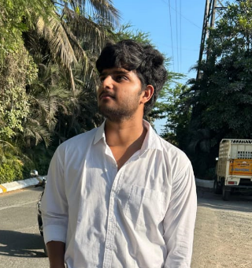

Contact: prakash.varun.0305@gmail.com
Linkedin: linkedin.com/in/varun--prakash
Github: github.com/RaoVrn
|  | I'm a Computer Science B.Tech student at SRM Institute of Science and Tcehnology, proficient in Python, C++, Java and more. With wins like the Bajaj Finserv Pentathon and experience at Samsung R&D integrating Alpha-CLIP tech, I craft seamless web applications. NPTEL certified in DBMS from IIT Kharagpur and with prior experience as a web development intern Prodigy Infotech, I'm eager to collaborate on impactful projects. |
Jan 2024 - Jun 2024
May 2024 - June 2024
June 2024 - July 2024
A personal Portfolio Website.
Hosted Link: raovrn.github.io/Portfolio
GitHub Link: github.com/RaoVrn/Portfolio
The project includes a Flask-based API that integrates the trained YOLOv3 models. Users can upload an image through a web interface, and the system will provide object detection results, including helmet detection and person on motorbike detection.
GitHub Link: github.com/RaoVrn/Helmet-Detction
This is a simple guessing game where you think of a number and the computer tries to guess it. You will be asked a series of yes or no questions to help the computer guess your number.
GitHub Link: github.com/RaoVrn/Binary-Tree-Guessing-Game
A minimalist weather application enabling users to fetch current weather conditions for any location, featuring temperature, humidity, pressure, and wind speed details.
Hosted Link: raovrn.github.io/PRODIGY_WD_05
GitHub Link: github.com/RaoVrn/PRODIGY_WD_05
This is a web-based Tic-Tac-Toe game implemented using HTML, CSS, and JavaScript. It allows players to enjoy the classic game of Tic-Tac-Toe either against each other or against an AI opponent.
Hosted Link: raovrn.github.io/PRODIGY_WD_03
GitHub Link: github.com/RaoVrn/PRODIGY_WD_03
I won second prize in the Bajaj Finserv Hackathon, demonstrating strong problem-solving and teamwork skills.
I developed a Helmet Detection system using Flask and YOLOv3, and created a Portfolio Website using HTML, CSS, and JavaScript.
I hold an NPTEL certificate in Database Management Systems from IIT Kharagpur and am proficient in Python, C++, Java, HTML5, CSS3, SQL, and JavaScript.